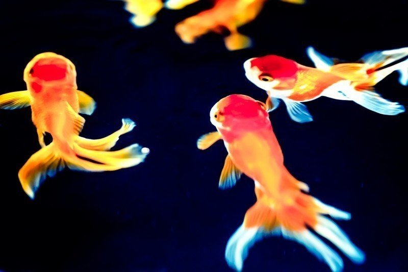

いついかなる時も数多の意志を動かすことは難しい。
それに私はそのようなことに長けている訳でもないし、ましてや誰かに慕われるような性格でもない。しかし、今こうして一〇〇匹近くの金魚たちとともに新たな希望を目指し、一世一代の大勝負に打って出ようとしていた。
夜更け過ぎのこと。交代で爺さんの見張り番をしていた者が大きな声を出した。
「皆起きろ！ やつの足音が聴こえる！」
その日爺さんは珍しく夜通し起きていて、常時落ち着かない様子であった。私はそんな様子が気になり寝ようにも寝れなかったのである。
「息を潜めろ。大丈夫、練習通りやればうまくいくさ」
皆の不安げな顔を見て、そう言った。水中では張り詰めた空気が流れていた。
そんなこととは露知らず、爺さんは意気揚々と部屋に入ってきた。
「ようやく一〇〇匹目じゃ」
呟きながら、棚の上にある水槽に近づいてくる爺さん。皆に配置の合図をする。
「よいしょっと」
爺さんが水槽の蓋を開けた瞬間、私は叫ぶように声を荒げた。
「行くぞおおお！！！」
水槽を覗き込んだ爺さんの目をめがけて、五匹の金魚が特攻した。
爺さんは思いもよらぬ攻撃に目を瞑ったが、その前に右目の眼球に金魚の鼻先が当たると、しゃがれた声を出しながら後退りをし、まもなく尻餅をついた。
五匹の金魚は役目を果たし、勇ましい顔をしながら水中に勢いよく帰ってきた。
「よくやった！ これで希望はつながった」
勇敢なる戦士たちに声をかける。皆これまでになく生き生きとした顔をしている。
「よし、では次の作戦に移行する！ 一組目行くんだ！」
ナイデルが声を張り上げると、私たちは唯一の逃げ道として希望を託していた水槽近くに位置する小窓を一斉に見た。
「さあ早く！」
時は残されていない。僅かに開いている小窓からは、生温かい風が流れ込んでいる。水槽と小窓との距離、およそ十五センチ。
あまり大勢で飛んでしまうと、つっかえてしまう危険性があるため、一〇匹一組でそこを目指した。たゆまぬ練習の成果もあって小窓への飛び乗りに成功する者が多かったが、それでも一組三匹ほどはあえなく地上へと落ちてしまい、自由に生きたいという健気な希望が散っていく様を私は目の当たりにしなければならなかった。
七組、八組、九組……。小窓にたどり着くことのできた者たちは一様にその向こう側に続く世界へと身を投げた。
小窓の真下には川が流れている。そう予測した私を信じ、皆無心で次々と下へ落ちていく。
川のせせらぎをその小窓を通して聴くことができた。しかし、もし見当が外れた場合、皆地上に打ちつけられ、その命は無残な形で終わりを迎える。もしそんなことがあったら、私は何があっても必ず地獄に落ちるだろう。
「いよいよ最終組だ」
私とナイデル、ヨスケを含んだ最終組は互いに目を合わせ、頷いた。
私たちはこれから希望ある未来に向けて飛ぶ。もしかしたら何匹かは地上に落ちてしまうかもしれない。でも、飛ぶんだ。それしか道は残されていない。
覚悟を決め、飛ぶために助走をつけようとした瞬間、恐れていた事態に陥っていることに気づいた。
「おのれ。人間を舐めやがって」
爺さんが怒りの形相でこちらを見ているのだ。当然その顔には好々爺の面影など一切ない。それに爺さんの手の中には地上に落ちてしまった金魚たちが収まっている。うち数匹は既に息が絶えているようにも見えた。
「急ごう！」
私たちは練習通り息を合わせ、駆け上がるように思い切り飛んだ。
「させるか！」
爺さんが私たちの道を塞ぐように跳躍し手を出した。その手によって三匹の金魚があえなく地上へと落下した。想定以上の跳躍に驚きつつも、私はナイデルとヨスケとともに爺さんの手の指の間を通り抜け、小窓付近の段差へと着地した。
「あと一息だ」
しかし、ヨスケは地上に落ちていった仲間たちを見ている。
「逃さんぞ！」
息つく間もなく、爺さんが再び手を伸ばそうとしていた。
「振り返るな！ 外へ飛ぶんだ！」
そう言った瞬間、小窓の外へと飛んだ。思わず目を閉じた。私たちは風の音とともに外へと落下した。
まもなく生死が決まる。というのに、頭の中ではこれまでの出来事が走馬灯のように駆け巡っていた。
そもそも、なぜこんなことになっているのか。飼い主に飼われ始めた時の私は普通の暮らしが続いて、その暮らしに埋もれるように命が果てるのだろうと思っていた。
しかし、実際はどうか？ 転々と住む場所が変わり、挙げ句の果てには悪者から逃れる始末。まったく、将来の見通しなど立てるだけ無駄ではないか！
そんなことを考える余裕があった。現実では一瞬のはずなのに、落下速度はまるでスローモーションのように感じられた。不思議な感覚である。
もしかしたら、すでに私は無惨にも地上に打ちのめされて死んでいるのではないか。そんな風にも思えた。
目を開けたら、そこは誰もが憧れる天国……いや、見るもおぞましい地獄の果てだろう。今になってはどうしようもないことを考えつつも、私は自身の感覚を徐々に取り戻していった。
ポチャン！
ん……この音はまさか？
「大丈夫か？」
ナイデルの声とともに目を開けると、そこは間違いなく現実に流れる水路の中であった。